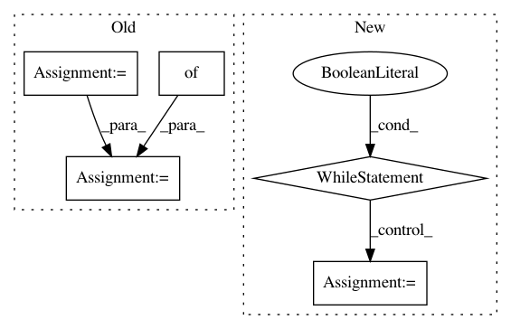

b523b464d8cafe29e352981c1c6df941f205592a,nilmtk/metrics.py,,mean_normalized_error_power,#Any#Any#,109
Before Change
"""
mne = {}
numerator = {}
denominator = {}
for appliance in predicted_power:
numerator[appliance] = np.sum(np.abs(predicted_power[appliance] -
df_appliances_ground_truth[appliance].values))
denominator[appliance] = np.sum(
df_appliances_ground_truth[appliance].values)
mne[appliance] = numerator[appliance] * 1.0 / denominator[appliance]
return mne
def rms_error_power(predicted_power, df_appliances_ground_truth):
After Change
pred_generator = meter.power_series(periods=sections)
total_diff = 0
sum_of_ground_truth_power = 0
while True:
try:
pred_chunk = next(pred_generator)
except StopIteration:
break
else:
truth_generator = ground_truth_meter.power_series(
periods=[pred_chunk.timeframe], chunksize=1E9)
truth_chunk = next(truth_generator)
// TODO: do this resampling in the pipeline?
truth_chunk = truth_chunk.resample(period_alias)
pred_chunk = pred_chunk.resample(period_alias)
diff = (pred_chunk.icol(0) - truth_chunk.icol(0)).dropna()
total_diff += sum(abs(diff))
sum_of_ground_truth_power += truth_chunk.icol(0).dropna().sum()
mne[meter.instance()] = total_diff / sum_of_ground_truth_power
return pd.Series(mne)
In pattern: SUPERPATTERN
Frequency: 3
Non-data size: 5
Instances
Project Name: nilmtk/nilmtk
Commit Name: b523b464d8cafe29e352981c1c6df941f205592a
Time: 2014-07-09
Author: jack-list@xlk.org.uk
File Name: nilmtk/metrics.py
Class Name:
Method Name: mean_normalized_error_power
Project Name: haotianteng/Chiron
Commit Name: cb40dd779e1f3a7ca23ea25edd03ddaca9472838
Time: 2018-04-29
Author: neven.miculinic@gmail.com
File Name: chiron/chiron_eval.py
Class Name:
Method Name: evaluation
Project Name: chakki-works/doccano
Commit Name: 49d41416e440926f0a9a8243b4d77f6f5468efe9
Time: 2019-03-12
Author: light.tree.1.13@gmail.com
File Name: app/server/utils.py
Class Name: JsonHandler
Method Name: parse